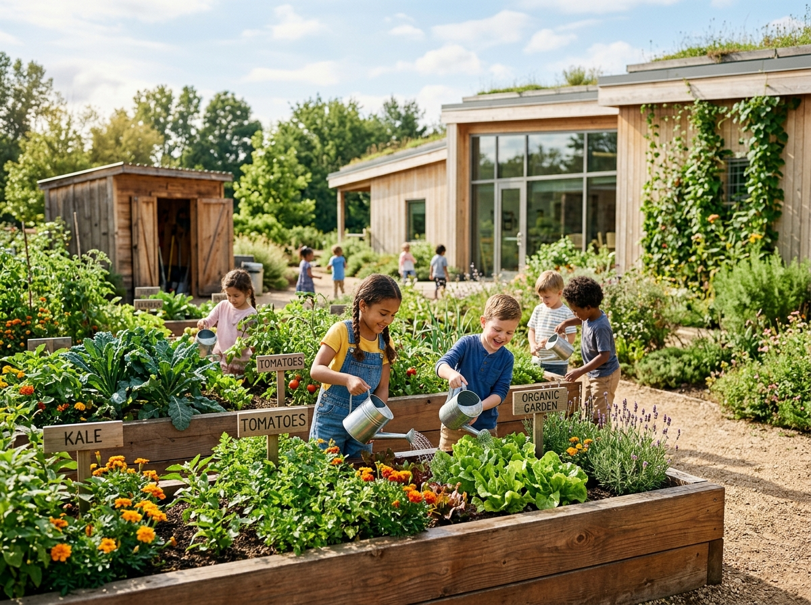
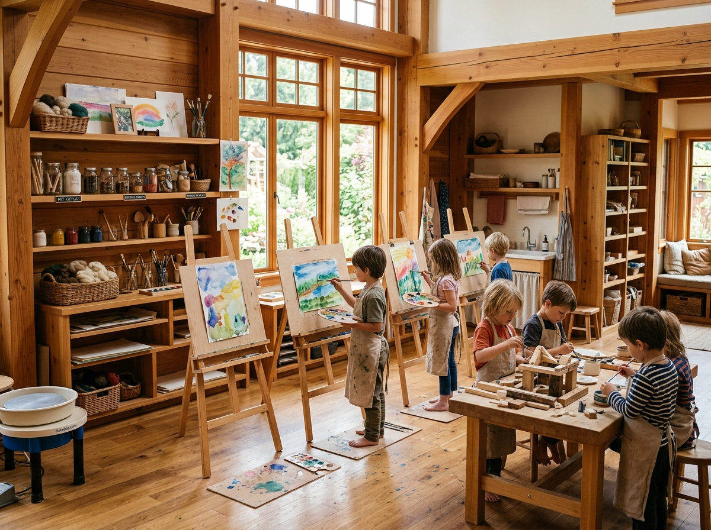
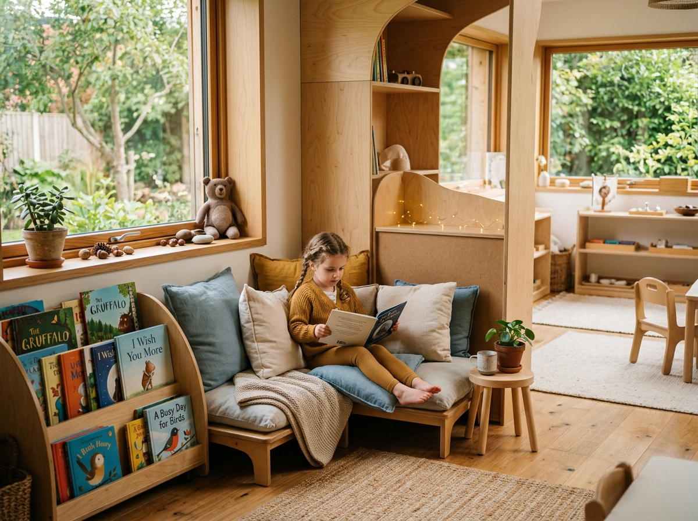

Child-led Montessori education for ages 1.5–12 blending self-paced exploration, outdoor botany, and 1:8 guide mentorship.
A natural daily rhythm moving from morning focus to outdoor discovery and studio inquiry.
Uninterrupted individual work with self-correcting Montessori materials.
Gardening, plant care, and sensory nature exploration in raised beds.
Family-style dining with linen tables, tea pouring, and courtesy routines.
Clay modeling, painting, music circles, and collaborative research pods.
Purposeful hands-on areas connecting concrete exploration to abstract capability.
Self-care, food prep, and courteous habits building coordination and focus.
Sensory exploration of scale, color, and weight preparing the mind for math.
Tactile phonics and letter tracing leading to spontaneous writing and reading.
Bead manipulation and geometric solids bridging concrete to abstract thinking.
Children choose purposeful activities and focus without artificial bells or interruptions.

“The child who concentrates is immensely happy.”
— Dr. Maria MontessoriMovement autonomy, spoken language expansion, and gentle toilet independence.
Sensorial math, phonetic reading, geography puzzle maps, and practical care.
Cosmic education, student research expeditions, advanced math, and botany.

Raised vegetable beds, sensory herb gardens, and outdoor science observation stations.
Daily Outdoor Botany Stewardship
Wooden easels, clay tables, and instruments for daily creative work.
Creative Studio Arts
Soft reading alcoves and peace tables for emotional self-regulation.
Quiet ReflectionReal stories from families enrolled in our learning pod.
“Our daughter grew into a confident, self-directed reader in just three months.”
“The 1:4 toddler ratio and natural wood setting gave us complete peace of mind.”
“Our son loves the botany garden and self-chosen research projects.”
Private updates of your child's works in progress.
Track materials mastered across curriculum areas.
Real-time check-in timestamps and dietary logs.
One-click term payments and invoice receipts.
Stay closely connected with guide observations, dietary notes, milestone tracking, and seamless account management.
Open Parent Dashboard →